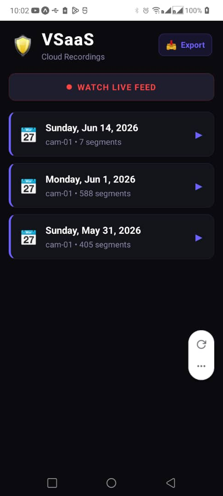

VSaaS — Video Surveillance as a Service
The Constraint
RTSP camera networks installed in retail environments operate over consumer-grade Wi-Fi — connections that drop, degrade, and recover unpredictably throughout the day. A naive streaming pipeline drops footage whenever connectivity lapses. The client requirement was unambiguous: zero frame loss in the historical archive, with live feeds that immediately snap back to real-time on reconnection.
Engineering Architecture
A Python bridge process ingests raw RTSP feeds and operates two simultaneous FFmpeg encoding pipelines: a rolling 2-second HLS playlist for live consumption, and 60-second .ts segment files for archival chunking. An intelligent thread-safe queue intercepts the upload path. During network outages, segments cache locally and are flushed to MinIO object storage in strict temporal order once connectivity resumes — preserving timeline integrity without operator intervention.
Live feeds intentionally discard stale frames during outages rather than serve delayed footage, ensuring the live view represents reality the moment it returns. The mobile application, built with React Native and Expo, stitches daily chunk sequences into continuous playback timelines dynamically queried from Supabase PostgreSQL metadata.
Stack
Python · FFmpeg · HLS/RTSP · MinIO S3 · Supabase (PostgreSQL) · React Native · Expo · expo-av · Docker Compose
